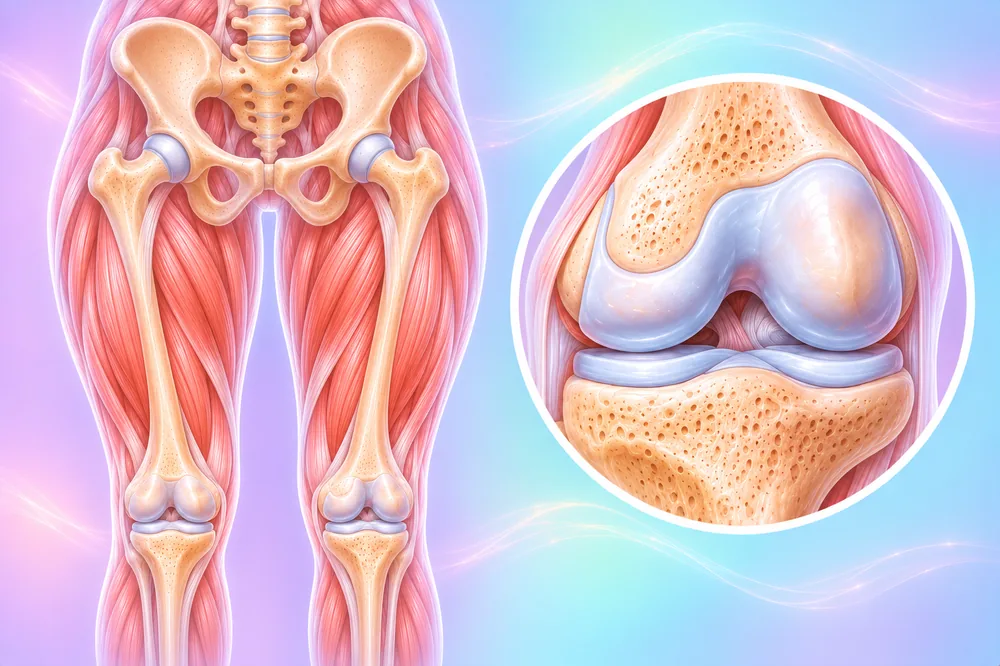

Pelvis, pinggul, lutut & kaki
32 keadaan dan gejala
 Dislokasi lutut
Dislokasi lutut- Dislokasi pinggul
- Dislokasi tempurung lutut
 Kecederaan ligamen ACL (lutut)
Kecederaan ligamen ACL (lutut)- Kecederaan ligamen krusiat (lutut)
- Kecederaan ligamen lutut
- Kecederaan ligamen PCL (belakang lutut)
- Kecederaan ligamen sisi (lutut)
 Kecederaan lutut
Kecederaan lutut- Kecederaan meniskus (rawan lutut)
 Kecederaan saraf femoral (paha)
Kecederaan saraf femoral (paha)- Kecederaan saraf peroneal (kaki terkulai)
- Kecederaan saraf sciatik
- Kecederaan saraf tibia (betis)
- Kecederaan tisu lembut lutut
- Koyak bahagian belakang meniskus (lutut)
 Meniskus diskoid (lutut, sejak lahir)
Meniskus diskoid (lutut, sejak lahir)- Meniskus haus (lutut)
 Patah bahagian atas tulang kering (dataran tibia)
Patah bahagian atas tulang kering (dataran tibia)- Patah pinggul (leher femur)
- Patah pinggul tepat di bawah sendi bebola (intertrokanter)
- Patah soket pinggul (asetabulum)
- Patah tempurung lutut
- Patah tulang kering dan betis
- Patah tulang paha (batang)
- Patah tulang paha tepat di atas lutut
- Patah tulang pelvis
- Retak tempurung lutut
- Sista meniskus (lutut)
- Terseliuh lutut
 Tertarik otot lipat paha
Tertarik otot lipat paha- Tulang tertarik tanggal di bawah lutut (tuberkel tibia)